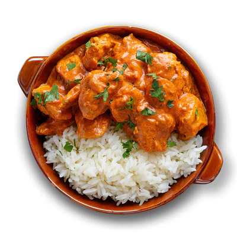

Butter Chicken

Easy Indian Butter Chicken Recipe
An easy butter chicken recipe I've perfected over the years and shared with many others.
The sauce is perfect when creamy and not too thick or too thin.
The level of salt and spices can be suited to your taste.
Garam and tandoori masala can be found in the ethnic aisle of your grocery store.
Prep Time:
15 mins
Cook Time:
45 mins
Total Time:
1 hrs
Ingredients:
- 1 cup butter, divided
- 1 onion, minced
- 1 tablespoon minced garlic
- 1 (15 ounce) can tomato sauce
- 3 cups heavy cream
- 2 teaspoons salt
- 1 teaspoon cayenne pepper
- 1 teaspoon garam masala
- 1 ½ pounds skinless, boneless chicken breast, cut into bite-sized chunks
- 2 tablespoons vegetable oil
- 2 tablespoons tandoori masala
Steps:
- Preheat the oven to 375 degrees F (190 degrees C).
- Melt 2 tablespoons butter in a skillet over medium heat.
Stir in onion and garlic,
and cook slowly until the onion caramelizes to a dark brown, about 15 minutes.
- Meanwhile, combine cream, tomato sauce, remaining butter, salt, cayenne pepper,
and garam masala in a saucepan over medium-high heat; bring to a simmer.
Reduce heat to medium-low, cover, and simmer, stirring occasionally,
for 30 minutes. Stir in caramelized onions.
- While the sauce is simmering, toss chicken with vegetable oil until coated. Season with tandoori masala and spread out onto a baking sheet.
- Bake chicken in the preheated oven until no longer pink in the center, about 12 minutes.
- Add cooked chicken to the sauce and simmer for 5 minutes before serving.
Back to main page